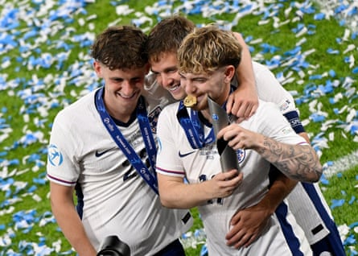

Lee Carsley has set his sights on winning a third European Under-21 Championship in succession as England saw off Germany in dramatic style after extra time to retain their title.
The substitute Jonathan Rowe’s deft header was enough to secure a 3-2 victory in Bratislava after the Young Lions had seen a 2-0 lead, courtesy of goals from Harvey Elliott and Omari Hutchison, cancelled out. The senior team’s head coach, Thomas Tuchel, who had flown especially from the United States to watch the final, addressed England’s victorious players in the changing room.
Carsley, who this month signed a contract extension that will take him through to the next tournament in Albania and Serbia in 2027, said he is already turning his attention to whether England can repeat their success, after emulating the victories of Dave Sexton’s sides in 1982 and 1984.
“It was a great target to go for and the most important thing is that the young 21s keep winning, keep producing players for the senior team,” said Carsley. “We spoke a lot about the position where potentially we’ll go for three, so I’m definitely looking forward to that. It’s a great target to go for. I don’t think it’s been done yet, so it may be looking at the squad as well. We’ve got a strong squad, but I think we have to give the squad so much credit, and I’m so proud of the players, the way they’ve conducted themselves for the 29 days that we’ve been together.”
The captain, James McAtee, revealed that Tuchel and his assistant Anthony Barry had been “giddy” after the victory and believes the victorious players had boosted their chances of being promoted to the senior squad in future.
“He came in and gave everyone a big hug,” said the Manchester City forward. “It’s good to see him and hopefully he was impressed with us.”
Only Elliott – who was named as player of the tournament – and Charlie Cresswell remain from England’s triumph in Georgia two years ago and Carsley paid tribute to the winning mentality this inexperienced squad have shown after losing to Germany during the group stages.
“We spoke about the difference between having hope and having belief, and this group definitely thought they could, they believed they could win this tournament, which is a big thing, especially when things aren’t going your way,” he said. “We started off very clunky at the tournament, we stayed in there, they stuck together, they got better as the tournament went on, and they’ve got what they deserve.
Harvey Elliott (right) celebrates with Tyler Morton (left) and James McAtee after winning the player of the tournament trophy.Photograph: Radovan Stoklasa/Reuters
“But over the four years, we’ve beaten almost everyone in terms of France, Italy, Portugal, Spain, Germany, so we should take heed from that. I said it’s a massive positive, the fact that we can not only compete at this level, but we can win consistently, or in a good style.”
The Football Association’s chief executive, Mark Bullingham, also paid tribute to Carsley’s feat. “I am sure Lee will be humble about what he and the group have achieved but he should be recognised for this special achievement,” he said. “Before Lee took over, we hadn’t won this trophy for 39 years. In two tournament cycles he has won it twice. On top of this exceptional tournament success, he has overseen player development with many under-21s making their debut for the senior team.
“We are delighted Lee has extended his contract with us. In Ashley Cole, Tim Dittmer and James Ryder, Lee has built a brilliant coaching team leading and supporting a very exciting generation of young players who are proving that they can win at the highest international level.”